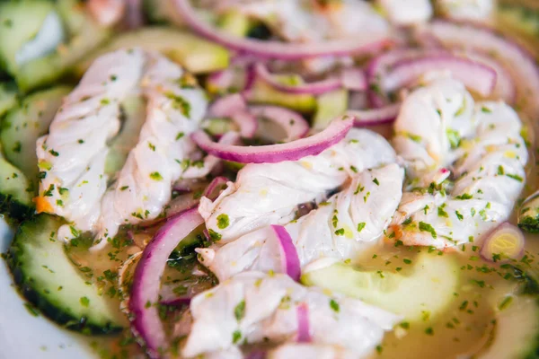

Aguachile

Ingredientes
- Gambas 800 grs
- Cayena 3 unidades
- Limón 6 limones
- Pepino 2 unidades
- Cebolla 1 unidad
-
Cilantro
- Sal y pimienta
Preparacion
- Limpiar las gambas(Quitar la cabeza y las tripa a las gambas) y guardar en la nevera.
- Exprimir los limones y reservar el zumo.
- En un bol, triturar las cayenas
- En un recipiente adecuado meter las gambas, salpimentarlas, agregar las cayenas y vaciarle el zumo de limón y dejar marinar dentro de la nevera 15 min, con cuidado de cubrir completamente las gambas
- Pelar los pepinos y quitarle las semillas, cortar en medias lunas y reservar.
- Picar las ramitas de cilantro
- Cortar la cebolla en juliana, agregar el pepino, el cilantro y la cebolla a las gambas y mezclar, dejar reposar 20 min antes de comer.